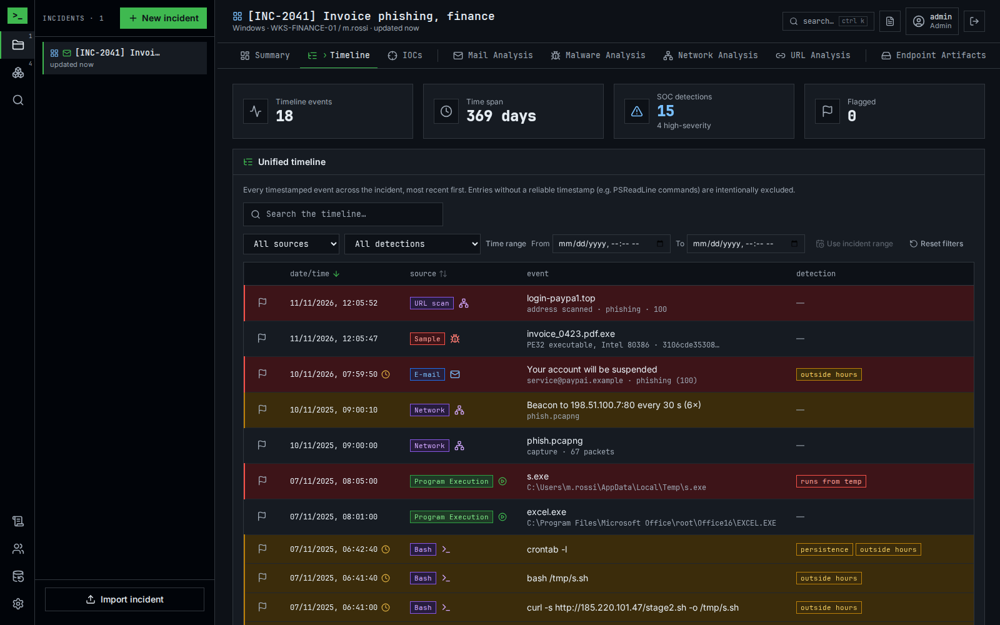

Forensic analysis platform
A self-hosted web platform for incident response teams. Open an incident, drop the evidence, read it in one timeline and hand over a report. Every action is attributed to an analyst.

What it does
Incidents
One case per machine or user, shared by the team, with notes, flags and an audit trail.
Super-timeline
Every timestamped event of every source in one filterable list.
Mail analysis
Verdict for reported e-mails: headers, SPF/DKIM/DMARC, links, attachments, isolated browser.
Malware analysis
Static analysis, YARA, capa and a disassembler view. Samples are never executed.
Network analysis
pcap and pcapng read by Wireshark's engine: filters, streams, objects, TLS decryption, beacons.
URL analysis
The isolated browser visits a link for you: screenshot, redirects, forms and a verdict.
Host evidence
Browser history, shell history, endpoint artifacts and Windows event logs, with collection scripts.
Indicators
IOCs from every tab, seen across incidents, checked with threat intelligence, exported as STIX or MISP.
Detection
Built-in rules for commands, artifacts and event logs, plus your own keywords and business hours.
Report and API
PDF or HTML incident report; a REST API with keys and webhooks for automation.
Quick start
git clone https://github.com/n36l3c7/Nik.git && cd Nik
cp .env.example .env # set DB_PASSWORD, SECRET_KEY and the worker tokens
docker compose up -d --build # or: podman compose up -d --buildOpen https://localhost:8443 and create the first account: it becomes the admin. Deployment covers production, TLS, backups and a manual RHEL install.
Documentation
| User guide | Incidents, evidence, every analysis tab, search, report and settings, with screenshots. |
| Deployment | Docker or Podman Compose, production, manual RHEL install, backups. |
| Configuration | Every environment variable and in-app setting. |
| API | REST endpoints, authentication, uploads and automation. |
| Architecture | Design, folder structure, data model and how each analysis works. |
| Developers | Local setup, tests, extending Nik, the incident JSON format. |
| Changelog | What changed in each release. |